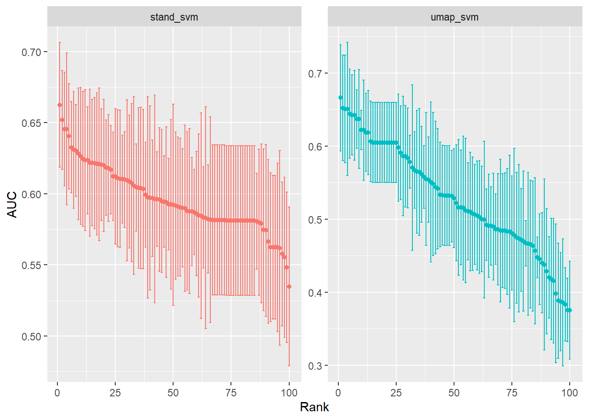
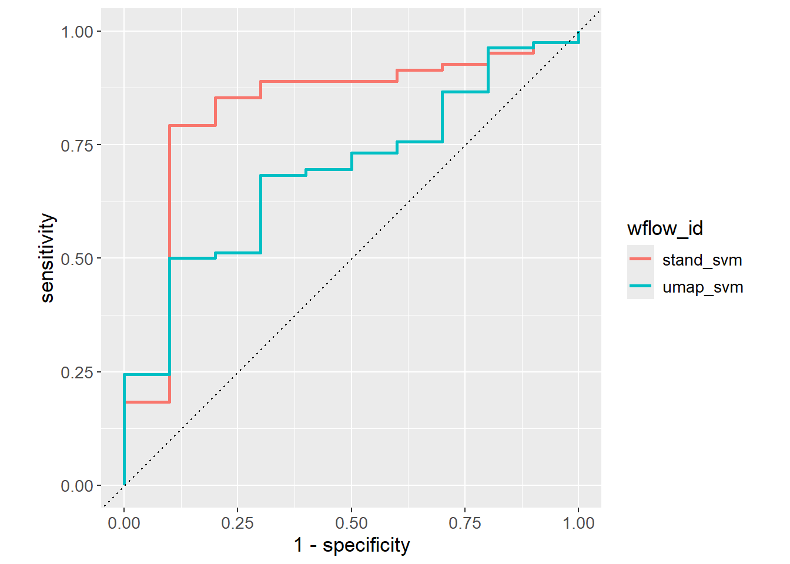

Show the code
set.seed(1338)
library("tidymodels")
tidymodels::tidymodels_prefer()
library("embed")Set seed and load packages.
set.seed(1338)
library("tidymodels")
tidymodels::tidymodels_prefer()
library("embed")Load data.
count_matrix_clr <- readr::read_rds("https://github.com/WilliamH-R/BioStatistics/raw/main/data/count_matrix/count_matrix_clr.rds") |>
select(-"NA")
meta <- read.csv(file = "data/metadata.txt") |>
as_tibble() |>
select(Run, chem_administration, ETHNICITY, geo_loc_name,
Host_age, host_body_mass_index, Host_disease, host_phenotype, host_sex) |>
rename(Sample = Run,
Treatment = chem_administration,
Ethnicity = ETHNICITY,
Location = geo_loc_name,
Age = Host_age,
BMI = host_body_mass_index,
Disease_severity = Host_disease,
EDSS = host_phenotype,
Sex = host_sex) |>
mutate(Patient_status = case_when(Disease_severity == "1HealthyControl" ~ "Healthy",
TRUE ~ "MS"),
EDSS = as.factor(EDSS),
EDSS = case_when(is.na(EDSS) & Disease_severity == "1HealthyControl" ~ "-1",
is.na(EDSS) & Disease_severity != "1HealthyControl" ~ "Unknown",
TRUE ~ EDSS),
EDSS = as.factor(EDSS))Chosen parameters.
params$percentage_train
[1] 0.8
$n_folds
[1] 5
$grid_size
[1] 100
$rbf_sigma_lower
[1] -10
$rbf_sigma_higher
[1] -4Due to the data transformations which the kernels allow, SVMs can model non-linear relationships between the features and the response allowing for the method to capture complex structures. The risk of overfitting is higher for non-linear models as they are more flexible making the model more prone to capture noise in the data. It emphasizes the need for cross-validation and hyperparameter optimization. The code is structured in the same way as for the linear models, so to avoid repetition explanations are kept to a minimum.
The count matrix is joined with the metadata such that the patient status is known for each sample.
count_matrix_clr <- count_matrix_clr |>
inner_join(meta,
by = "Sample") |>
select(-c(Sample, Treatment, Ethnicity, Location,
Age, BMI, Disease_severity, EDSS, Sex)) |>
relocate(Patient_status)The objects needed for cross-validation are created.
count_matrix_clr_split <- initial_split(count_matrix_clr,
prop = params$percentage_train,
strata = Patient_status)
count_matrix_clr_train <- training(count_matrix_clr_split)
count_matrix_clr_test <- testing(count_matrix_clr_split)
count_matrix_clr_folds <- vfold_cv(count_matrix_clr_train,
v = params$n_folds)As for the linear model chapter, two recipes are created. One without any pre-processing steps, one with UMAP for feature selection.
stand_recipe <- recipe(Patient_status ~ .,
data = count_matrix_clr_train)
umap_recipe <- stand_recipe |>
embed::step_umap(all_predictors(),
num_comp = 7,
neighbors = 4,
min_dist = 0.01)The model specification is created. The SVM model is used with a radial basis function kernel. The hyperparameters cost and rbf_sigma are tuned. cost is similar to \(\xi\) from the chapter on SVM, i.e. how much observations are allowed to cross the margin thereby controlling the Bias-Variance trade off. Low values allows for misclassifications creating a simple model with high bias and low variance. Vice versa for high values which penalizes misclassifications. rbf_sigma scales the distance between points inversely. Low values decreases the distance between points in the high dimensions, high values increases the distance. When the distances are lower, the observations affect each other more, creating a more complex model with high variance and low bias.
svm_spec <- svm_rbf(cost = tune(),
rbf_sigma = tune()) |>
set_engine("kernlab") |>
set_mode("classification")The ranges of the hyperparameters are updated.
svm_param_ranges <- svm_spec |>
extract_parameter_set_dials() |>
update(rbf_sigma = rbf_sigma(c(params$rbf_sigma_lower,
params$rbf_sigma_higher)))
svm_param_ranges |>
extract_parameter_dials("rbf_sigma")Radial Basis Function sigma (quantitative)
Transformer: log-10 [1e-100, Inf]
Range (transformed scale): [-10, -4]The workflow set is created by combining the recipes and specifications.
# Create workflow set
workflow_set <- workflow_set(
preproc = list(stand = stand_recipe,
umap = umap_recipe),
models = list(svm = svm_spec)
)
# Update workflow set with hyperparameter ranges
workflow_set <- workflow_set |>
option_add(id = "stand_svm",
param_info = svm_param_ranges) |>
option_add(id = "umap_svm",
param_info = svm_param_ranges)
workflow_set# A workflow set/tibble: 2 × 4
wflow_id info option result
<chr> <list> <list> <list>
1 stand_svm <tibble [1 × 4]> <opts[1]> <list [0]>
2 umap_svm <tibble [1 × 4]> <opts[1]> <list [0]>The same grid search is performed as for the linear models. The grid search is performed for a grid of size 100.
# Set grid search settings
grid_settings <-
control_grid(
save_pred = TRUE,
parallel_over = "everything",
save_workflow = TRUE,
extract = function(x) x
)
# Perform grid search
grid_results <- workflow_set |>
workflow_map(
fn = "tune_grid",
seed = 1337,
resamples = count_matrix_clr_folds,
grid = params$grid_size,
control = grid_settings
)Performance across the grid search is visualized. From the search, it would seem the grid ranges should be increased further as the performance is not plateauing.
grid_results |>
collect_metrics() |>
filter(.metric == "roc_auc") |>
group_by(wflow_id) |>
arrange(desc(mean)) |>
mutate(rank = row_number()) |>
ungroup() |>
ggplot(aes(x = rank,
y = mean,
col = wflow_id)) +
geom_point(size = 2) +
geom_errorbar(aes(ymin = mean - std_err,
ymax = mean + std_err)) +
theme(legend.position = "none") +
labs(x = "Rank",
y = "AUC") +
facet_wrap(~ wflow_id,
ncol = 2, scales = "free_y") +
lims(y = c(0.3, 1)) +
theme(text=element_text(size=13))
The best hyperparameters are extracted and added to the workflow for fitting and predicting.
# Extract best hyperparameters
workflow_ids <- grid_results |>
pull(wflow_id)
tuning_params_result <- workflow_ids |>
purrr::map(function(id) {
grid_results |>
extract_workflow_set_result(id) |>
select_best(metric = "roc_auc") |>
mutate(wflow_id = id)
}) |>
bind_rows() |>
select(wflow_id, cost, rbf_sigma)
# Finalize
workflow_set_final <- workflow_ids |>
purrr::map(function(id) {
grid_results |>
extract_workflow(id) |>
finalize_workflow(tuning_params_result |>
filter(wflow_id == id))
})
names(workflow_set_final) <- workflow_ids
# Fit
workflow_set_fit <- workflow_ids |>
purrr::map(function(id) {
workflow_set_final[[id]] |>
last_fit(split = count_matrix_clr_split)
})
names(workflow_set_fit) <- workflow_ids
# Predict
roc_auc_results <- workflow_ids |>
map(function(id) {
workflow_set_fit[[id]] |>
collect_predictions() |>
roc_curve(truth = Patient_status,
.pred_MS,
event_level = "second") |>
mutate(wflow_id = id)
}) |> bind_rows()The ROC curves are visualized for the different models suggesting stand_svm is the better model.
roc_auc_results |>
ggplot(aes(x = 1 - specificity,
y = sensitivity,
col = wflow_id)) +
geom_path(lwd = 1) +
geom_abline(lty = 3) +
coord_equal() +
theme(text=element_text(size=13))